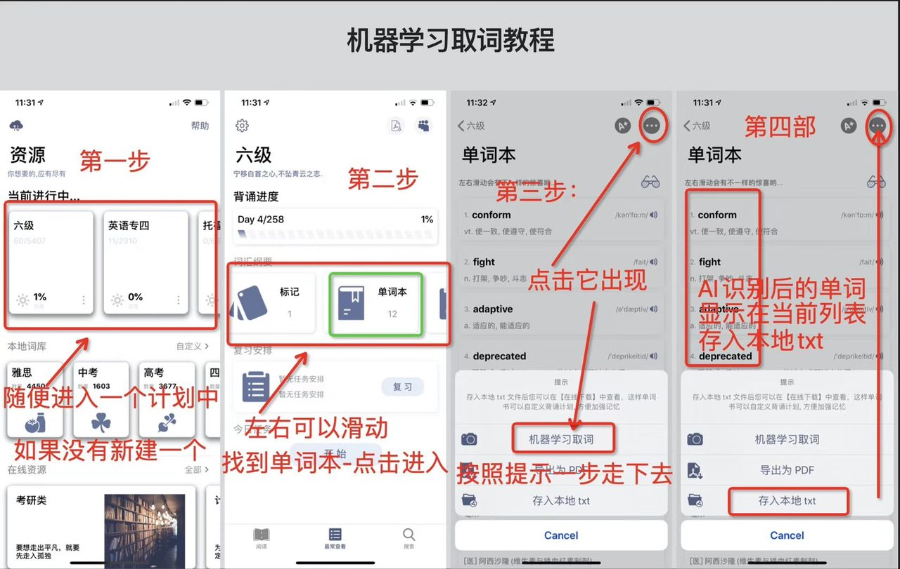
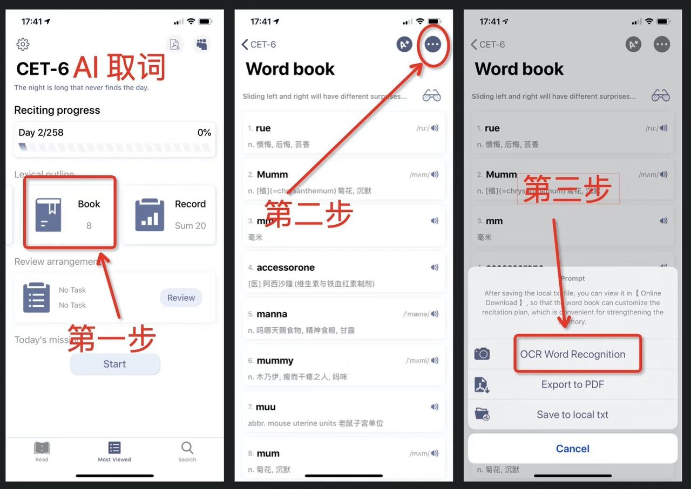

一句话回答：进入任意一个计划 → 在「词汇纲要」区域左右滑动找到 单词本 → 点右上角「…」菜单 → 选择「机器学习取词」，拍照或选图后 App 会识别英文并自动分词， 识别出的单词直接进入当前列表。同一个菜单里还有 「存入本地 txt」与「导出为 PDF」。
操作步骤
- 进入一个计划。 在资源页面的「当前进行中」里点开任意一个词库（四级、六级都行）。 如果一个都还没有，先建立一个。
- 找到单词本。 计划详情页的「词汇纲要」区域可以左右滑动， 在标记、单词本、记录之间切换。点击单词本进入。
- 打开「…」菜单。 单词本页面右上角的圆形「…」按钮，点开后会出现操作面板。
- 选择「机器学习取词」。 按提示走完拍照 / 选图与识别流程。
- 识别结果进入当前列表。 识别出的单词会显示在单词本里，逐词带上音标与释义。
- 存入本地 txt（可选但推荐）。 回到「…」菜单选择「存入本地 txt」， 这批词就会变成一个 TXT 文件，可以在 自定义导入里为它单独建立背诵计划。

「…」菜单里的四个操作
| 操作 | 作用 | 什么时候用 |
|---|---|---|
| 单词列表播放 | 把当前列表变成播放列表 | 通勤、走路时，配合锁屏背单词 |
| 机器学习取词 | 拍照识别英文并自动分词 | 纸质书、讲义、幻灯片、路牌上的生词 |
| 导出为 PDF | 把单词本排版成 PDF | 打印出来做纸质默写，或发给同学 |
| 存入本地 txt | 导出成 TXT 词表 | 为这批词单独建立一个背诵计划 |

取词之后：让它真的进入复习
这是最容易被跳过、却最关键的一步。识别出来的词躺在单词本里，不等于会被复习。 要让它进入艾宾浩斯的复习节奏，需要走完这条链路：
- 机器学习取词 → 单词进入单词本
- 「存入本地 txt」→ 变成一个 TXT 文件
- 资源 → 自定义导入 → 找到这个 TXT
- 建立背诵计划 → 从此按第 1、2、4、7、15 天自动复习
之所以要绕这一圈，是因为只有「计划」才带排程。 单词本更像一个收集箱，而复习节奏挂在计划上。
为什么自己收集的词更好记
从真实材料里捞出来的词自带语境——你记得它出现在哪本书、哪一页、什么句子里。 这些语境就是记忆锚点， 比现成词表里孤立的同一个词好记得多。所以哪怕每天只收三五个，也值得坚持。
提高识别准确率的几个细节
- 把纸放平，避免弯曲的书脊。文字弯曲是识别错误的首要来源。
- 光线均匀，避开阴影和反光。侧光拍书页容易糊。
- 只拍需要的那一段。整页拍进去会识别出大量你早就认识的词，之后还得手动剔。
- 识别后核对一遍。OCR 会把 rn 认成 m 这类形近组合搞错， 拼错的词匹配不到释义，留在词库里只会浪费复习量。
常见问题
取词需要联网吗？
识别过程涉及模型计算，建议在有网络时进行。识别完成后， 单词进入本地词库，之后的复习与查词都不再需要网络。
能识别手写体吗？
印刷体的效果最好。手写体识别率明显下降，工整的印刷字体（书籍、讲义、幻灯片）是它最擅长的场景。
识别出来的词会自动去重吗？
App 会与你已掌握的词库比对去重，把重复的词筛掉，剩下真正陌生的词让你挑选。 即便如此，仍建议自己再过一遍——去掉那些认识但恰好没在词库里的词。